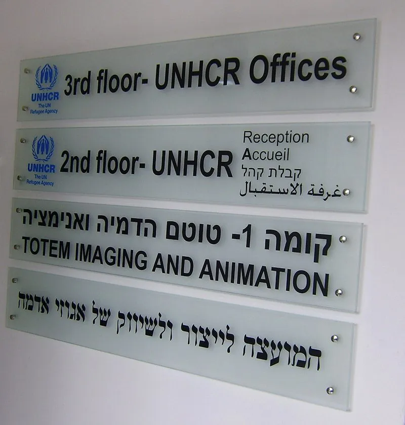
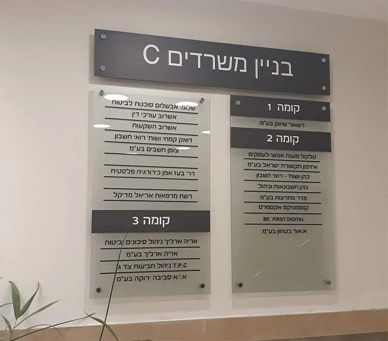
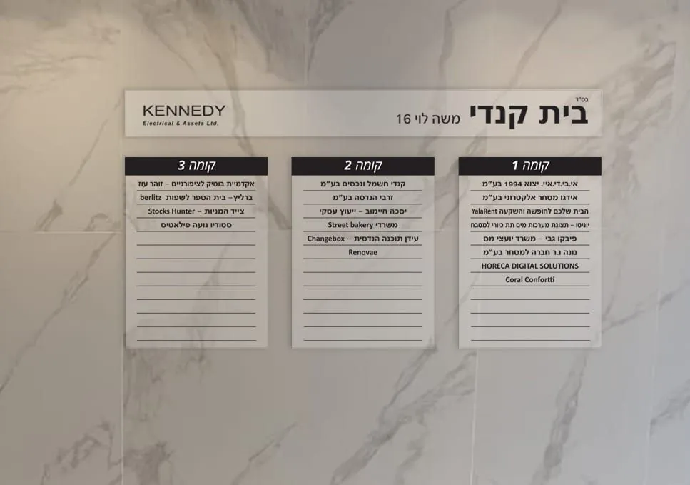
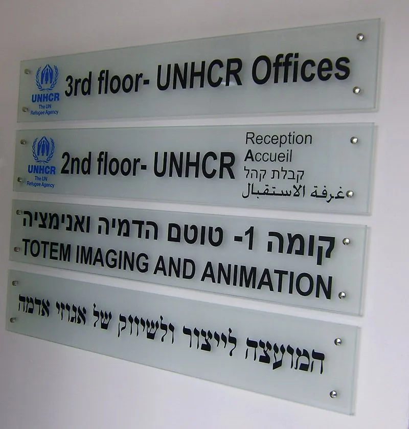
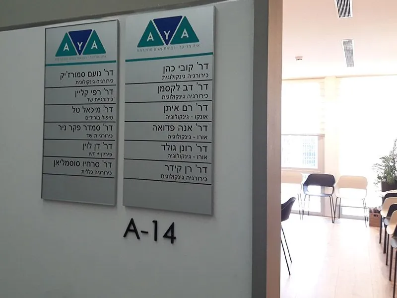
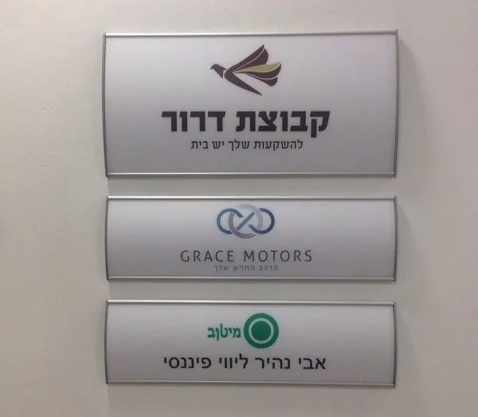
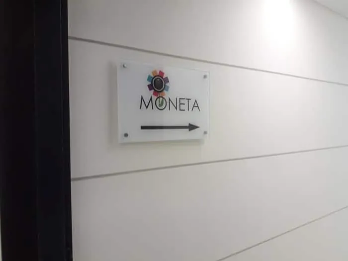
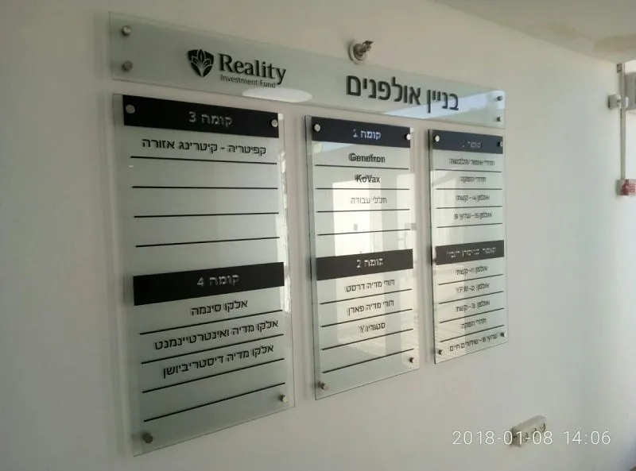

שילוט הכוונה לבניין: מהלובי ועד הדלת, בלי לשאול את השומר.
שילוט הכוונה הוא מה שמוביל אורח מהכניסה לבניין עד הדלת הנכונה: לוח הקומות בלובי, השלט ליד המעלית, שלטי הקומה, המסדרון והחדרים.
פלומבה שלטים מתכננת, מעצבת, מייצרת ומתקינה שילוט הכוונה פנימי וחיצוני לבנייני משרדים, למוסדות, למרפאות ולמפעלים, כפרויקט אחד לכל הבניין. השלטים מאלומיניום, זכוכית, פרספקס או עץ, והשילוט המודולרי בנוי כך שמחליפים שם של דייר או של חדר בלי להזמין שלט חדש. שולחים תוכנית או צילומים, מקבלים המלצה והדמיה בלי עלות, והשלטים מוכנים בדרך כלל תוך 5 עד 15 ימי עבודה.

שילוט הכוונה שכבר מראה את הדרך.







- וגם: היצירה 31, שטיבל 8, הארד 3, מרכז הבמה, בית הכוהנים, אל-כרך, Digipro ו-yad2.
מה כולל שילוט הכוונה לבניין?
- בלובי: לוח קומות בכניסה או ליד המעלית, עם הדיירים לפי קומות. מזכוכית, כמו בבית קנדי ובבניין משרדים C, או בחוץ על קיר הבניין, כמו בהארד 3.
- בקומה: מספר הקומה ושמות החברות מול המעלית, ושלט קומת משרדים מזכוכית שקופה, גם עם שעות פתיחה, על פרופיל אלומיניום אנודייז.
- במסדרון: שלטי הכוונה עם חצים, ושלטי דגל דו צדדיים לשירותים, עם סמלים בחיתוך צורני.
- על הדלתות: שלטי חדרים מפרופיל אלומיניום קמור, עם הדפסה על נייר ושקף הגנה.
- בחוץ: טוטם מאלומיניום בכניסה למפעל, ועמוד הכוונה עם חצים.
פנים, חוץ ומודולרי, את כל אלה אנחנו עושים. מה שלא תמצאו כאן הוא שלט חירום בודד מהמדף: כאן מתכננים שילוט לבניין שלכם, לפי הקומות, הדיירים והדרך שאורח עושה מהדלת ועד המשרד.
דייר חדש? שולפים, מחליפים, סוגרים.
בבניין משרדים השמות זזים כל הזמן: חברה עוזבת, חברה נכנסת, עובד עובר חדר. לכן השילוט המודולרי שלנו בנוי מפרופיל אלומיניום, קמור או מעוגל, עם כיסוי פוליקרבונט. כשצריך לעדכן, מסירים את הכיסוי מצד השלט, מחליפים את ההדפסה וסוגרים. ככה עובד השילוט המודולרי של רשות שדות התעופה, וככה נראים שלטי הקיר של קבוצת דרור, Grace Motors ומיטב.
גם לוח מזכוכית אפשר לתכנן מחולק לעמודות, כמו השלט בכניסה לבניין המשרדים בקניון ערי החוף, ככה שם אחד מתחלף בלי לגעת בשאר. השלט נשאר, רק הדיירים מתחלפים.
שילוט למשרדיםמאילו חומרים?
- פרופיל אלומיניום: קמור, מעוגל או שטוח ("ויסטה"), ברוחבים שונים, עם הדפסה מתחלפת.
- זכוכית: שקופה, בעובי 8 או 10 מ״מ, עם מדבקה בדמוי התזת חול, גרפיקה מודבקת או מודפסת, או בחיתוך צורני, כמו השלט של קרן קיימת לישראל.שלטי זכוכית
- פרספקס שקוף: עם דוגמאות בהתזת חול, בהתקנה ישירה על הקיר או מרחפת.
- אלומיניום אנודייז: לשלט בכניסה למשרד, כמו של רא״ג חשמל.
- עץ: גם הוא אפשרות.
איזה מהם? תלוי בבניין, ובכמה פעמים השמות אצלכם מתחלפים. על זה בדיוק מדברים בשיחת הייעוץ.
איך זה עובד?
- שולחים: תוכנית של הבניין, או צילומים של הלובי, הקומות והמסדרונות, ורשימת הדיירים.
- מקבלים: המלצה אילו שלטים, מאיזה חומר ובאיזה גודל, והדמיה, בלי עלות.
- מייצרים: את כל השלטים לבניין.
- מתקינים: בשטח, מהלובי ועד הדלת האחרונה.
שאלות על שילוט הכוונה.
לא מצאתם כאן את התשובה? התקשרו או כתבו לנו בוואטסאפ.
מה כולל שילוט הכוונה לבניין?
לוח קומות בלובי או ליד המעלית, שלטי קומה, הכוונה במסדרונות, שלטי חדרים ושירותים, ובחוץ טוטם או עמוד הכוונה. אנחנו עושים שילוט הכוונה פנימי וחיצוני, כולל שילוט מודולרי שמתעדכן.
אפשר להחליף שם של דייר או של חדר בלי להזמין שלט חדש?
כן. בשלטים מפרופיל אלומיניום יש כיסוי פלסטיק שמסירים מצד השלט, מחליפים את ההדפסה וסוגרים בחזרה.
מה מתאים ללובי של בניין משרדים?
לוח קומות מזכוכית או מפרופיל אלומיניום, בכניסה או ליד המעלית, עם הדיירים לפי קומות. אם השוכרים מתחלפים לעיתים קרובות, כדאי לתכנן אותו מחולק לעמודות או לפסים, כך ששם אחד מתחלף בלי שלט חדש.
איך בוחרים ספק לשילוט הכוונה?
מבקשים לראות שילוט שהוא כבר התקין בבניינים, ובודקים שהתכנון, העיצוב, הייצור וההתקנה אצל אותו ספק, כדי שלא תצטרכו לתאם בין כמה. בפלומבה שלטים כל השלבים האלה אצלנו, ולוחות קומות שכבר התקנו בבניינים מופיעים בעבודות שבעמוד הזה.
כמה זמן לוקח להכין שילוט הכוונה?
5 עד 15 ימי עבודה, לפי כמות השלטים, הגודל והמורכבות.
שלחו לנו תוכנית של הבניין. את הדרך נסמן אנחנו.
תוכנית קומות, או צילומים של הלובי והקומות ורשימת הדיירים, בוואטסאפ או במייל. נחזור עם המלצה אילו שלטים, מאיזה חומר ובאיזה גודל, והדמיה, בלי עלות.